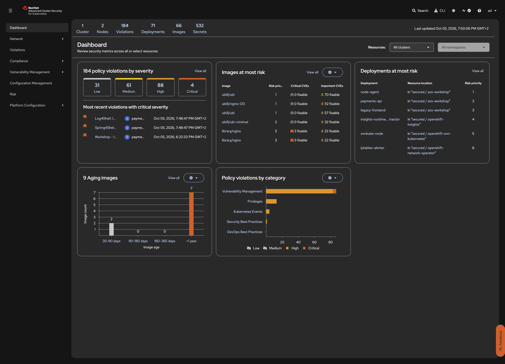

RHACS: Security Lifecycle Workshop
This step deploys a small, deliberately insecure application that gives RHACS real findings to work with. It has three components, each showing a different mix of vulnerability (CVEs in the image) and configuration risk (privileges, exposure, secrets). Telling these two apart is the core idea of risk-based vulnerability management.
| Deployment | Image | Vulnerability profile | Configuration risk |
|---|---|---|---|
|
|
Outdated Alpine 3.16.2 base (2022), many fixable Important/Critical CVEs |
Root user (anyuid SCC), plaintext secret in an env var, no resource limits, internet-facing Route |
|
|
CVE-2021-44228 (Log4Shell) and other Java CVEs |
Default restricted SCC, internal only |
|
|
Outdated 2021 UBI 8.4 base, many fixable RHSA errata |
Privileged, host PID and network, host |
| These workloads are exploitable on purpose. Deploy them only on a disposable lab cluster and never expose them to untrusted networks. |
Prerequisites
-
ACS Central running on the hub cluster from Cluster Setup
-
At least one secured cluster registered and healthy
-
ROX_API_TOKENandACS_CENTRAL_ROUTEexported as described in Export Workshop Variables -
The secured cluster can pull from
docker.io,ghcr.io, andregistry.access.redhat.com
Why these workloads are risky
Old base images build up CVEs over time. Nothing in the NGINX 1.22 or UBI 8.4 image changed, yet new CVEs keep being published against the packages inside them. Scanning only at build time misses this. RHACS keeps re-matching running images against current vulnerability data.
Severity alone does not show risk. A critical CVE in a privileged, internet-exposed pod is far more urgent than the same CVE in an isolated batch job. Step 6 shows how RHACS combines both into a risk score.
Steps to apply
1. Deploy the vulnerable application
~1 minute (image pull + deployment rollout)
What: Deploy the namespace, RBAC, and three intentionally vulnerable workloads on the secured cluster.
Why: The vulnerability management, risk analysis, policy enforcement, and remediation exercises in the following steps need deployments with actual vulnerability data and misconfigurations to work with.
oc apply -f 04-vulnerable-workloads/ --context secured2. Wait for all pods to be running
What: Verify that all three deployments are available.
Why: The pods must be running before RHACS can scan the images and report findings.
oc get pods -n acs-workshop --context secured -wVerify: All pods are running
NAME READY STATUS RESTARTS AGE
legacy-frontend-xxxxxxxxxx-xxxxx 1/1 Running 0 60s
node-agent-xxxxxxxxxx-xxxxx 1/1 Running 0 60s
payments-api-xxxxxxxxxx-xxxxx 1/1 Running 0 60s3. Check the frontend Route
What: Verify that the frontend is reachable from the internet through the OpenShift Route.
Why: Internet exposure is one of the risk factors RHACS uses to rank deployments. The Route makes legacy-frontend the most exposed workload in the namespace.
curl -skI "https://$(oc get route legacy-frontend -n acs-workshop --context secured \
-o jsonpath='{.spec.host}')" | head -3Verify: Frontend responds with HTTP 200
HTTP/1.1 200 OK
server: nginx/1.22.0
...4. Verify that RHACS has scanned the images
~2 minutes (Scanner V4 indexes images after Sensor reports the deployments)
What: Confirm that RHACS has discovered the deployments and scanned their images.
Why: ACS needs time to index the images after the deployments appear. The vulnerability data will be empty until the scan completes.
curl -sk -H "Authorization: Bearer ${ROX_API_TOKEN}" \
"https://${ACS_CENTRAL_ROUTE}/v1/deployments?query=Namespace:acs-workshop" | \
jq '.deployments[] | {name: .name, namespace: .namespace}'Verify: Three deployments are visible in ACS
{
"name": "legacy-frontend",
"namespace": "acs-workshop"
}
{
"name": "payments-api",
"namespace": "acs-workshop"
}
{
"name": "node-agent",
"namespace": "acs-workshop"
}| If the vulnerability data is empty or shows zero CVEs, wait another minute and refresh. Scanner V4 needs time to index the images against its vulnerability database. |
Open the ACS Dashboard. The three acs-workshop deployments should appear in Deployments at most risk with priority 1, 2, and 3. The Images at most risk panel shows the UBI 8.4 and nginx images with their fixable CVE counts.

What this solves (compared to previous steps)
| Problem from previous steps | How this step solves it |
|---|---|
Steps 1-3 worked with whatever images were already on the cluster |
Deploys a controlled set of workloads with known CVEs, misconfigurations, and varying risk profiles for consistent exercises |
No realistic scenario combining vulnerability and configuration risk |
Three workloads each show a different mix: internet-facing with critical CVEs, RCE with no patch, privileged with an old base image |
What this does NOT solve (yet)
| Remaining problem | Addressed in |
|---|---|
The workloads are running but nothing stops more vulnerable images from being deployed |
Step 7: Policy Enforcement adds guardrails as code |
The CVEs are there but there is no structured way to triage, defer, or report on them |
Step 5: Vulnerability Management covers the full triage workflow |
Alternatives considered
| Approach | Notes |
|---|---|
Intentionally vulnerable workloads (this workshop) |
Controlled, repeatable scenario. Each workload represents a different risk archetype. Easy to deploy and clean up. |
Scanning whatever is already running on the cluster |
Realistic but unpredictable. CVE findings depend on what is deployed. Hard to write consistent exercises around. |
Synthetic test images with injected vulnerabilities |
More control over exact CVEs but less realistic. Does not show real-world base image issues or configuration risks. |
Reset
Remove the vulnerable workloads and the namespace.
| If you have already completed Step 7: Policy Enforcement, its policies block re-deploying these vulnerable workloads. Run the clean-up of the later steps first, in reverse order (09 to 05). |
oc delete project acs-workshop --context secured --ignore-not-found
oc wait --for=delete namespace/acs-workshop --context secured --timeout=5mThe namespace deletion also removes the ServiceAccounts, the anyuid and privileged RoleBindings, the Services, and the Route. RHACS removes the deployments from Risk and resolves their deploy-time violations automatically.